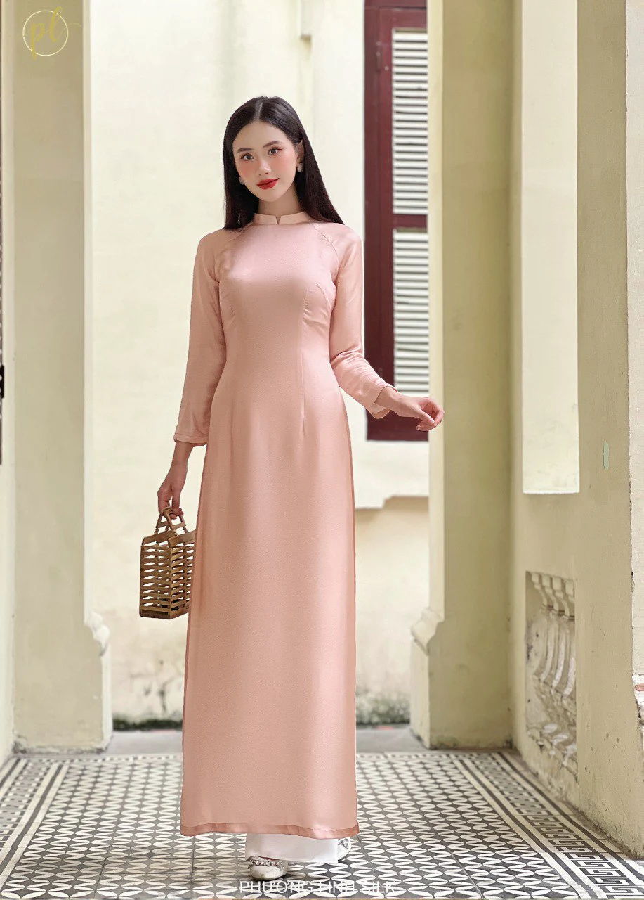
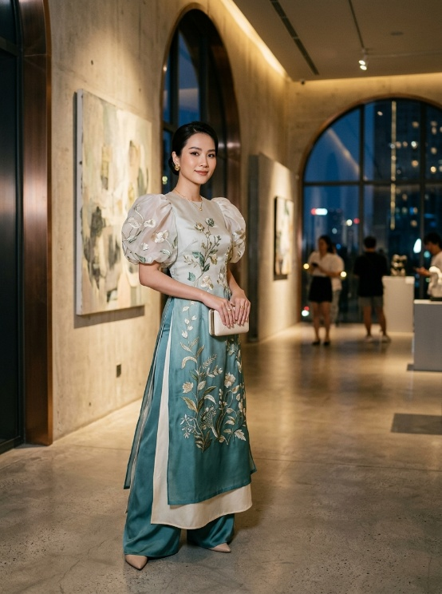
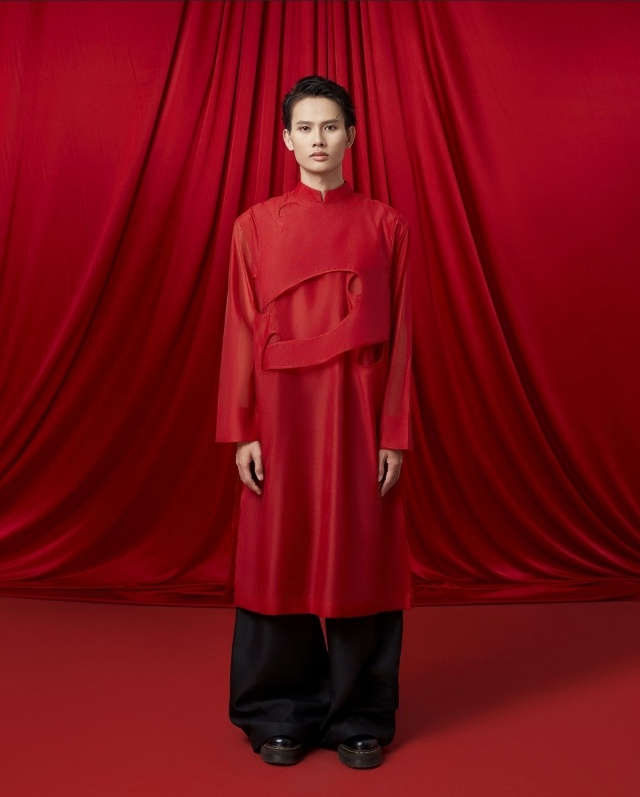
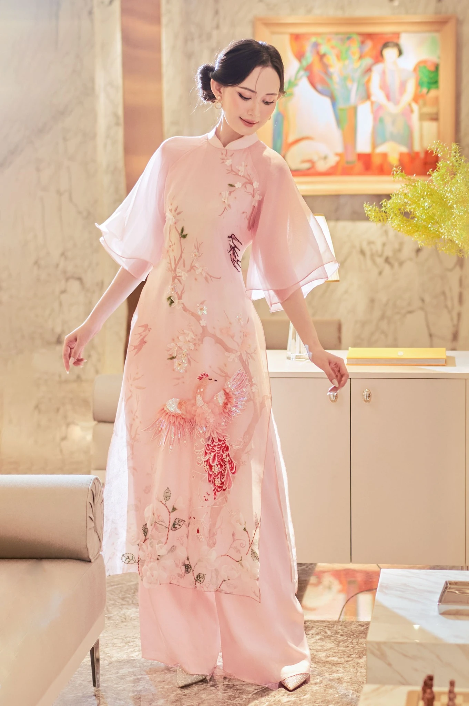
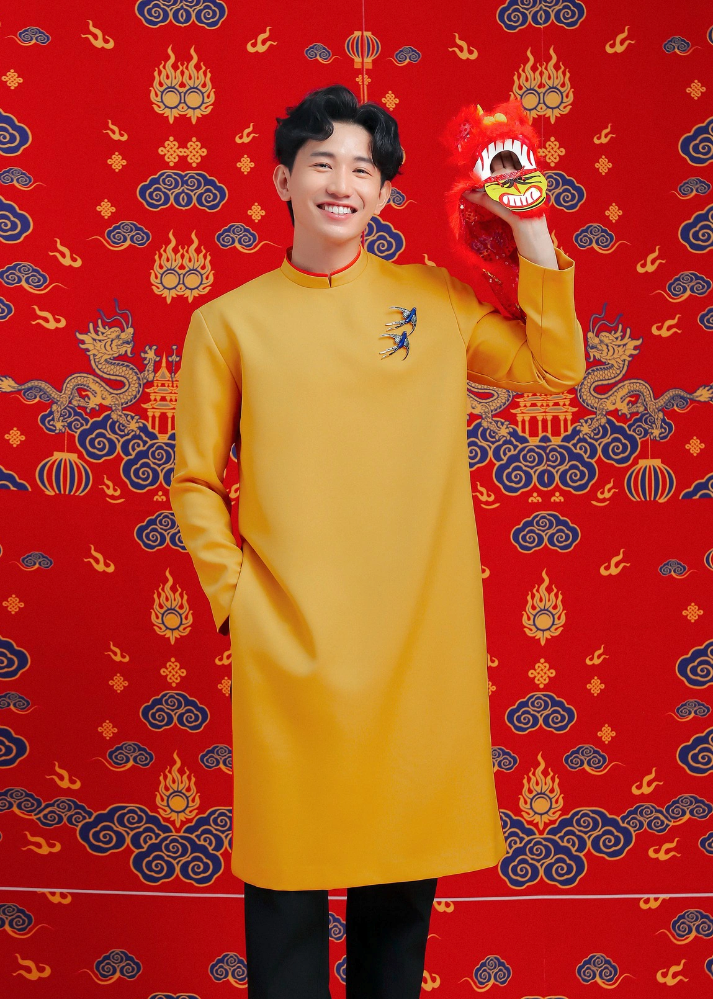
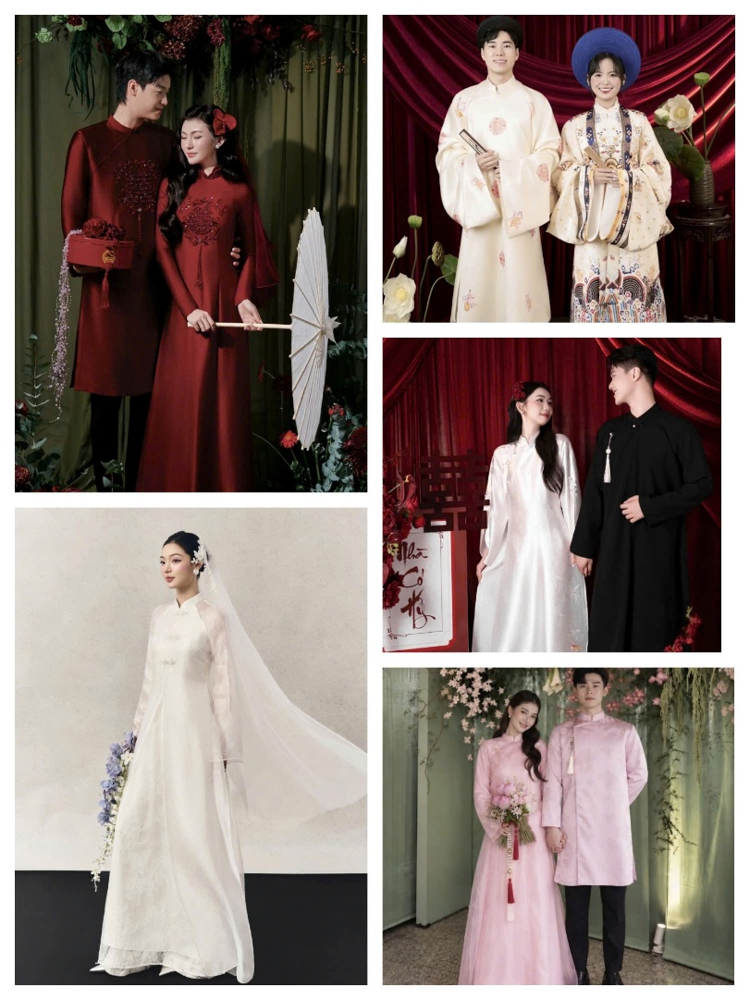

Áo dài giao lĩnh
Nguồn gốc sơ khai của áo dài Việt Nam.
Nguồn gốc sơ khai của áo dài Việt Nam.
Trang phục của người phụ nữ lao động.
Biểu tượng của tầng lớp quý tộc.
Sự du nhập của phong cách phương Tây.
Sự tinh tế và quyến rũ.
Định hình phong cách áo dài hiện đại.
Trong thời hiện đại.

Tà áo dài truyền thống gắn liền với biểu tượng tâm hồn Việt Nam: kín đáo mà gợi cảm, mộc mạc mà sang quý.
Xem mẫu →


Áo dài hiện đại hướng tới sự năng động, trẻ trung và tiện lợi với nhiều biến tấu.
Xem mẫu →Hình ảnh gắn với tuổi thanh xuân, trường học và những năm tháng học trò.
Xem mẫu →
